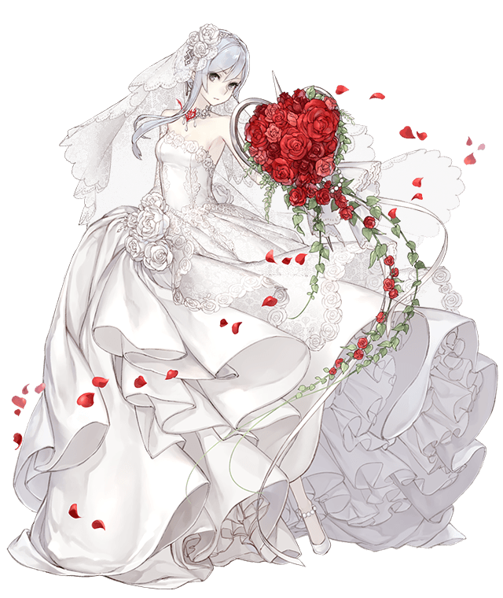

TheLonelyBride was founded by Emi (Emmannuel Ortega) initially as an homage to Snow White and her two classes: The Cleric and the Mage. Both had their outfits situated in their bridal adornments, suitable for their name.
In light of SINoALICE Global's End of Service, TheLonelyBride will now be transformed to not be just about SINoALICE anymore. His venture made it to Asphalt 9, carrying Snow White's legacy anywhere he goes.
But the SINoALICE spirit will always be around, with his plans to migrate his experience to the Japanese Edition and start from scratch being one of them.

Snow White / Mage (SINoALICE)